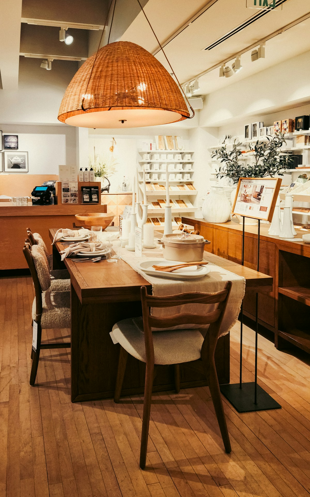

Yaşam alanlarına bakışımız
Hakkımızda
Ev, günün farklı anlarını bir araya getiren kişisel bir alan. BAŞ MOBİLYA’da mobilyalara bu gündelik yaşamın içinden bakıyoruz.

Marka fikri
Mobilya, hayatın içinde yer bulmalı.
Bir koltuk dinlenmeye, bir masa birlikte geçirilen zamana, bir kitaplık ise sevdiğimiz şeylere yer açar. Bu yüzden iyi bir mobilya yalnızca görünüşüyle değil, günlük kullanıma nasıl eşlik ettiğiyle de anlam kazanır.
BAŞ MOBİLYA; yalın çizgileri, doğal tonları ve kullanışlı ayrıntıları bir arada düşünen bir mobilya mağazası fikri üzerine kuruldu.
Ürün seçkisini incele →Hikâyemiz
Evin küçük anlarından ilham alıyoruz
Günün ilk kahvesi için uzanılan sehpa, akşam yemeğinde etrafında buluşulan masa, kitapların ve hatıraların yan yana durduğu raflar… Yaşam alanlarını özel kılan çoğu zaman bu sade, tekrar eden anlardır.
Ürün seçkisini oluştururken bu anlara eşlik edebilecek farklı parçaları bir araya getiriyoruz. Oturma odasından yemek alanına, yatak odasından çalışma köşesine kadar her bölümün kendi ihtiyacı olduğunu düşünüyoruz.

Seçim yaparken
Görünüş kadar kullanımını da düşünün
Bir mobilyayı yaşam alanına eklemeden önce ölçülerine, kullanılacağı yere ve günlük alışkanlıklara uygunluğuna bakmak seçim yapmayı kolaylaştırır.
Ürün sayfalarındaki açıklama ve ölçü notları, parçaları daha yakından tanımaya yardımcı olur. Ürün görsellerine dokunarak mevcut ürün detaylarını da inceleyebilirsiniz.
Kategorilere göz at →BAŞ MOBİLYA yaklaşımı
Sade, işlevli ve yaşama yakın
Ürün seçkimize yön veren üç temel düşünce.
Sade çizgiler
Yalın biçimler ve doğal tonlar, farklı yaşam alanlarıyla kolayca uyum kurar.
Günlük işlev
Mobilyanın günlük hayatta gördüğü iş, görünüşü kadar önemlidir.
Rahatlık
Dinlenme ve bir araya gelme alanlarında rahat kullanımı ön planda tutarız.
Bir sonraki adım
Size uyan parçaları keşfedin
Beş kategorideki ürünleri inceleyin; ürün detaylarından açıklama ve ölçü bilgilerine ulaşın.